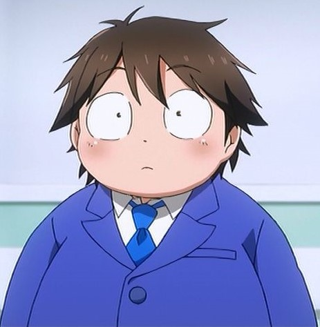
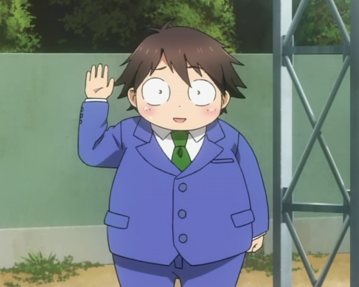
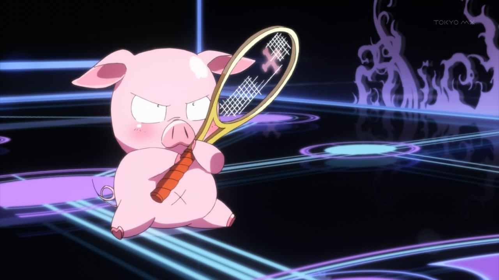

Галерея
Реальное имя - Арита Харуюки
(有田 春雪)
Игровое имя - Серебряный ворон
(Silver Crow)
Cтатус: Ускоренный
Дата рождения: 23 апреля
Один из главных персонажей в серии ранобэ и аниме "Accel World".
Личность
В начале ранобэ описан как типичный "изгой класса" - совершенно не общается со сверстниками, из-за духовной и физической слабости подвергается издевательствам и насмешкам одноклассников и школьных хулиганов. Крайне застенчив, пуглив, неуверен в себе, имеет проблемы с учебой. Испытывает огромный недостаток в общении даже с собственными родителями - отец после развода прекратил всякое общение с семьей, мать делит свое время между работой, фитнес-клубом, корпоративами и единственное общение - утром она дает ему 500 йен на обед. Достиг значительных успехов почти во всех жанрах игр, но предпочитает шутеры, впрочем, старается не афишировать свое увлечение в пределах школы. До становления "ускоренным" поддерживал общение только с друзьями детства Тиюри и Такуму, но после начальной школы Такуму ушел в другую школу, а с Тиюри общение сократилось до минимума из-за ее загруженности в секции легкой атлетики и статуса "школьного изгоя" Хару.
Внешность
Реальный
Низкого роста и упитанный, в новелле ранобэ описан как "типичный персонаж телевизионной драмы – «толстый ребенок, изгой класса»". Торчащие во все стороны непослушные волосы; округлое лицо без острых углов. Галстук школьной формы и серебряный нейролинкер впиваются в жирную шею, точно словно пытаясь задушить своего владельца.


Сетевой аватар
Аватар Харуюки в сети школы Умесата можно описать как, маленький розовый поросёнок с большими круглыми глазами, большим пятачком и миниатюрными копытцами, ходящий на двух ножках. Несмотря на всю свою неуклюжесть, у него невероятная скорость реакции. Он смог поставить самый большой рекорд по виртуальному сквошу, этот рекорд смогла побить только Черноснежка, применив ускорение.


Дуэльный аватар
Silver Crow "Серебряная ворона" - имя Дуэльного Аватара. Металлический. Выглядит как гуманоидный серебристый стройный робот среднего роста. Голова в виде гладкого шлема с зеркальной лицевой маской. Является металлическим аватаром левой стороны шкалы. Таким образом он устойчив к коррозионным, световым, огненным, колющим, рубящим атакам, умеренное сопротивление физическим и лучевым. Уязвим к электрическим и дробящим атакам. Отличается высокой скоростью и ловкостью, но низкой прочностью и силой. По изначальным характеристикам - "слабый боец-рукопашник".
Тактика ведения боя
До получения способности Полет был возможен только рукопашный бой. После его получения плоть до 4-го уровня основа тактики - заполнение шкалы спецатаки, взлет и атака врага ногой с крутого пикирования. На 4-м уровне обнаружилась слабость аватара перед дальними атаками. Ее удалось преодолеть только с помощью тренировки реакции, боевых рефлексов и навыков уворота. На 6-м уровне обнаружился огромный дефицит ударной мощи аватара - так как боевых навыков и оружия кроме своих кулаков аватар не имел, то и не мог нанести существенный урон аватарам и энеми с высокой защитой.
Способности
Изначальные в момент создания персонажа:
- Удар - обычный удар рукой. Физической урон.
- Пинок - обычный удар ногой. Физической урон.
- Удар головой - требует шкалу спецатаки. Маска шлема перед ударом начинает светиться. Атрибуты урона - световой и физический. На практике эту способность возможно применять исключительно против обездвиженных целей. Но зато она позволяет игнорировать физическую защиту и броню цели.
Бонусы за повышения уровня:
- Полет - усиления этого умения четырежды взяты в качестве бонусов за 2-5 уровни. С 4-м уровнем усиления возможен полет со скоростью до 600 км/ч, подъем в воздух на себе до 4 аватаров.
- Ясный меч - бонус за 6-й уровень. Усиливающее снаряжение. Длинный серебристый меч.
Умения полученные вне бонусов повышения уровня:
- Полет - получено на 1-м уровне, требует шкалу спецатаки. За спиной аватара пластины раскладываются в виде крыльев, пока есть энергия для спецатак можно свободно летать на крыльях при условии их целости. Невозможно применять его в безвоздушной среде, например на уровне "Космос" или "Океан" Хоть оно и было заложено в умения аватара изначально, но для его открытия потребовались весьма сложные условия - бой с соперником на 3 уровня выше, потеря 90% очков жизни и сильные эмоции.
- Оптическая проводимость - получено на 5-м уровне,не требует шкалу спецатаки. Щитки на локтях раскрываются в виде в виде панелей перевитых прозрачными трубками. Позволяют отражать любые лучевые атаки.
Инкарнация. Из базовых техник 1-го уровня доступны "увеличение дальности атаки":
- Лазерный меч - энергия инкарнации накапливается в виде клинка на руках. Высокая пробивная способность.
- Лазерное копье - создана после знакомства с инкарнационной способностью Черного Лотуса "Vorpal Strike". Фактически тот же Лазерный меч, Харуюки научился удлинять острие "меча" на несколько метров.
- Лазерное метательное копье - дальнейшее развитие Лазерного копья, Харуюки научился его создавать его одной рукой, а в другой лазерный клинок и нацелив на цель копье, разрубал его клинком. Получился быстрый и сильный выстрел, более-менее прицельно летящий на 20 м.
- Скорость Света - из энергии инкарнации создаются световые крылья.